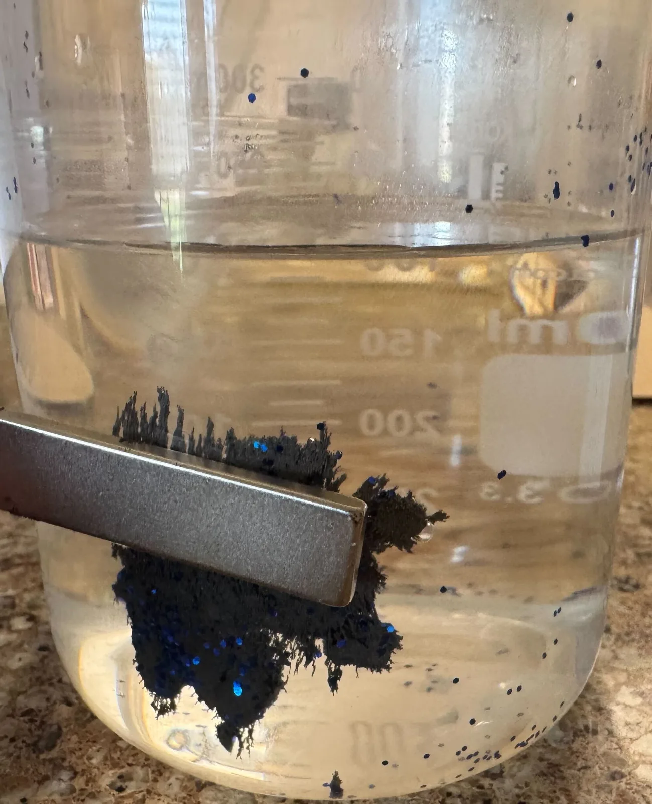
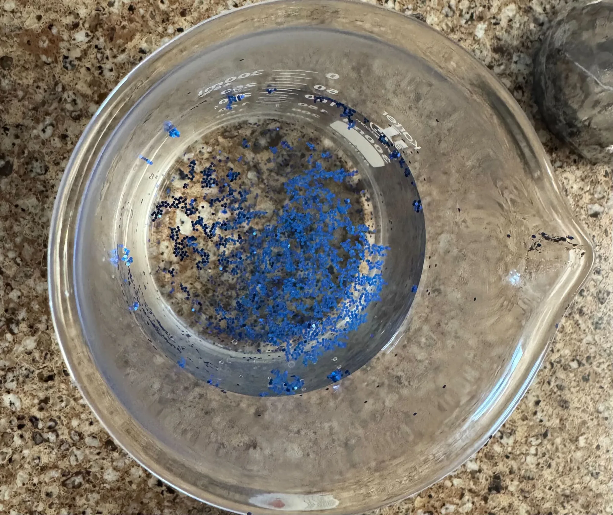
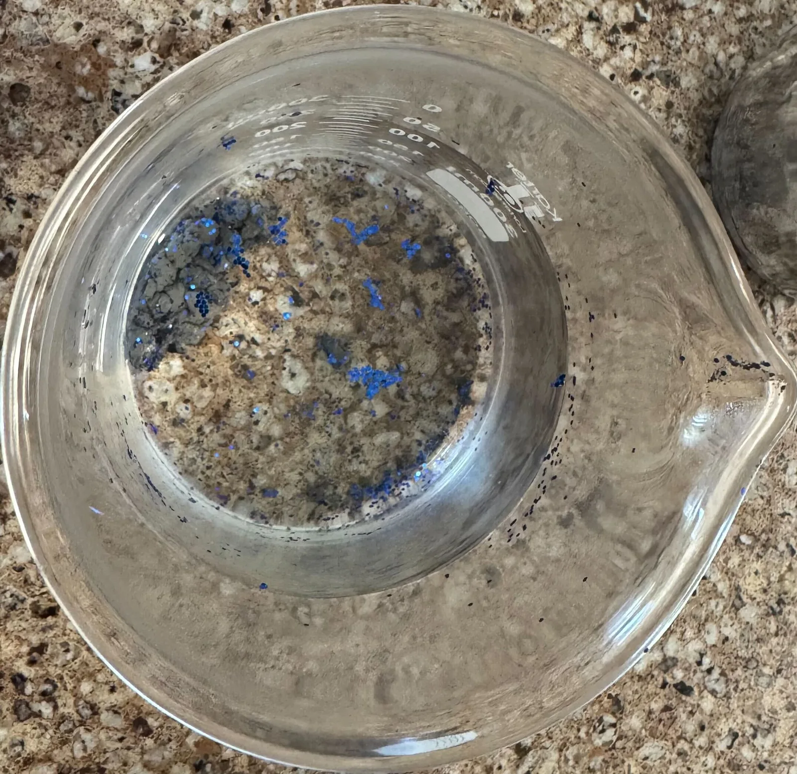
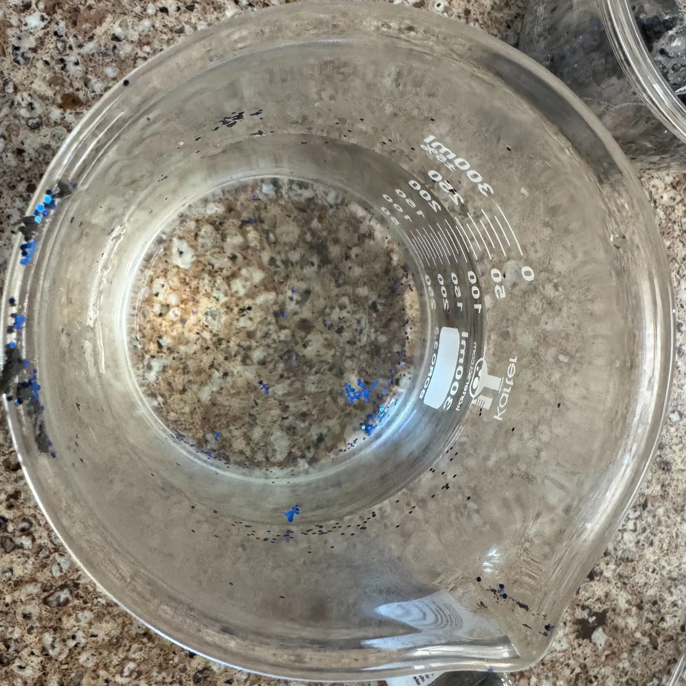
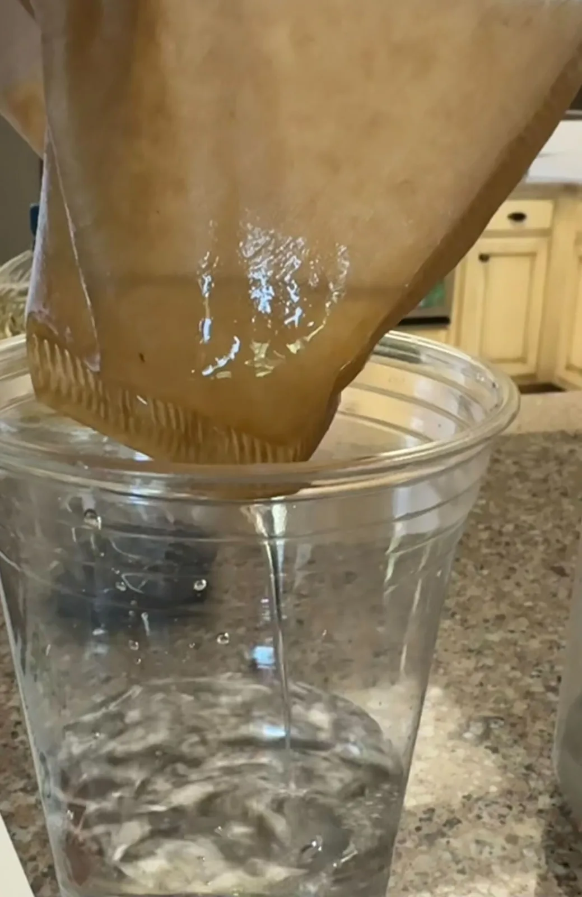
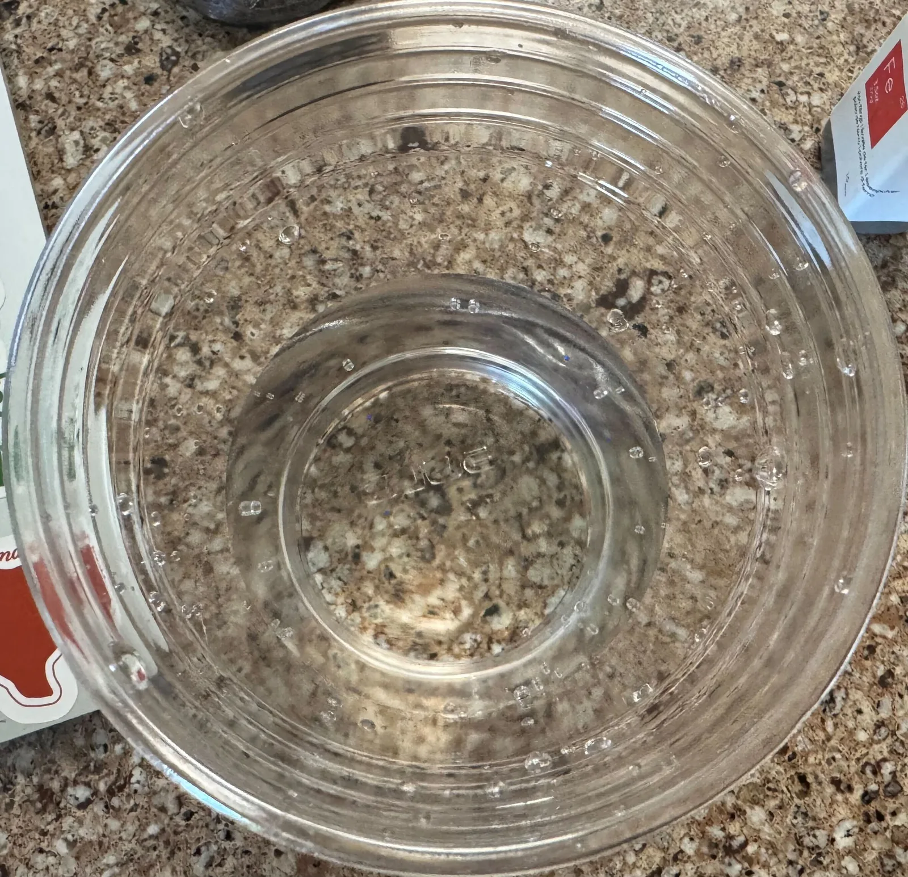

INNOVATION COMPETITION / 2025–2026
By Ximena Rodriguez

We are proud to announce that Ximena Rodriguez has been awarded the Prestigious Award for Outstanding Research and Practical Deployability for her exceptional project aimed at reducing microplastic contamination in water using a novel magnetic filtration system.
Microplastics—tiny plastic particles less than 5 mm in size—pose a severe threat to aquatic ecosystems and human health. These particles evade traditional filtration, accumulate in marine environments, and enter food chains, carrying toxic chemicals along with them. Addressing this invisible but pervasive pollution, Ximena’s innovative model utilizes the principle of hydrophobic interaction: iron filings coated with vegetable oil attract microplastics, which are also hydrophobic, enabling their removal through powerful neodymium magnets.
Her system consists of a water chamber containing oil-coated iron shavings where contaminated water flows through. Microplastics adhere to the iron particles, which are then captured magnetically. A secondary mesh filter removes any remaining fragments. Remarkably, this design is affordable—costing between $120 and $150 for a working model—and environmentally sustainable, using reusable materials and non-toxic oils.
Designed for accessibility and scalability, this magnetic filtration system can be integrated into existing community water systems, storm drains, wastewater plants, and marine conservation zones. It offers a practical and cost-effective approach for developing nations to combat microplastic pollution without the high costs or technical demands of advanced filtration technologies.
Visitors to this page will find two prominent buttons below, linking directly to Ximena’s full Research Paper and detailed Presentation, providing comprehensive insights into her innovative methodology and impactful findings.
This award recognizes Ximena’s rigorous research and her commitment to creating deployable, sustainable solutions for environmental challenges. We congratulate her on this remarkable achievement and look forward to the positive global impact of her work in preserving aquatic ecosystems and human health.




